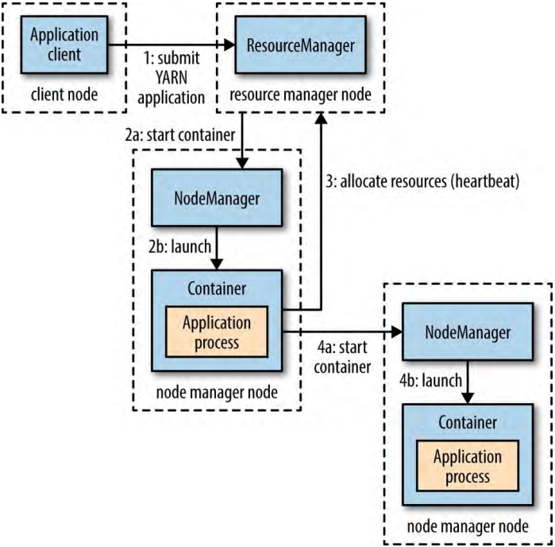

1、YARN应用运行剖析（Anatomy of a YARN Application Run）
YARN通过两类长期运行的守护线程（daemon）提供它的核心服务：
- 资源管理器（resource manager，每个集群只有一个），管理集群资源的使用。
- 节点管理器（node managners），运行在集群的各个节点上启动并监控容器（containers）。容器使用限定的资源（内存、CPU等）运行一个应用特定（application-specific）的进程。根据YARN配置的不同，容器可以是一个Unix进程或者是一个Linux cgroup（control group）。
图4-2 YARN运行一个应用（How YARN runs an application）

在YARN上运行一个应用：
- 客户端连接到资源管理器并请求资源管理器运行一个application master进程（step 1）。
- 资源管理器找到一个节点管理器，节点管理器启动容器并在容器中运行application master（step 2a和2b）。
- application master的行为取决于应用，它可以简单地在容器中运行一个运算并把结果返回给客户端；也可以从资源管理器请求更多的容器（step 3），并使用它们运行分布式运算（step 4a和4b）。
- 然后，是YARN应用执行作业。
可以看出来，YARN本身不提供应用的各个部分（客户端、master、进程）之间相互通信的方法。大多数特别的YARN应用使用一些远程通信形式（例如Hadoop的RPC层）把状态更新和结果返回给客户端，但是这是特别的应用程序。
1.1、资源请求（Resource Requests）
YARN有一个资源请求的弹性模型。请求一组容器时，可以在请求中表达每个容器需要的运算资源的量（内存、CPU），也可以表达容器的本地性限制（locality constraints）。
本地性在确保分布式数据处理算法高效使用集群带宽资源方面是关键的，所以YARN允许应用指定它所请求的容器的本地性限制。本地性限制可以用于请求一个指定节点、指定机架或集群任意位置（off-rack）的容器。
有时本地性限制不能被满足，这种情况下或者不分配资源或者放松限制。例如，一个请求的指定节点不能启动一个容器（因为其它一些容器在它上面运行），YARN会尝试在同机架的不同节点上启动容器，如果仍然不行，则在集群任意节点启动容器。
通常启动处理一个HDFS block（例如MapReduce的map task）的容器，应用会请求在保存着block三个复本的其中一个节点，或者在某个复本节点的同机架节点，实在不行在集群任意节点上启动容器。
YARN应用在运行过程中可以随时发送资源请求。例如，一个应用可以首先发送所有的资源请求，或者可以使用动态方式根据应用的资源需求变化动态地请求更多资源。Spark使用第一种方式，在集群中启动固定数量的executors。而MapReduce，有两个阶段：map task容器是首先请求的，但是reduce task的容器后来才启动。另外，如果有tasks失败，会请求额外的容器来重新运行失败的tasks。
1.2、应用有效期（Application Lifespan）
YARN应用的有效期可以非常显著的变化：从短到几秒的短期应用到运行数天甚至数月的长期应用。相比关注应用运行时间的长短，把应用以它们映射为用户运行的jobs的方式分类更加有用。
最简单的是每个用户job一个应用，MapReduce使用的就是这种模式。
第二种模式是每个工作流（workflow）的jobs或者用户会话（user session）的jobs运行一个应用。这种方式比第一种方式更加高效，因为jobs之间的容器可以重复使用，并且有缓存jobs之间中间结果的潜能。Spark使用的就是这种模式。
第三种模式是不同用户共享一个长期运行（long-running）的应用。这种应用通常扮演某种协调角色。例如，Apache Slider有一个长期运行的应用用以在集群上启动其它应用。Impala使用了这种方式，提供一个代理应用，Imapala daemons通过和代理应用通信请求集群资源。“always on”application master意味着非常低的查询响应延时，因为避免了启动一个新的application master的开销。
1.3、构建YARN应用（Building YARN Applications）
从零开始写一个YARN的应用是可以的，但是很没必要，通常使用能够满足目标的存在的应用。例如，如果要运行一个有向无环图（DAG，directed acyclic graph）的jobs，可以使用Spark或者Tez。对于流式处理可以使用Spark、Samza、或者Storms。
有些项目简化了YARN应用的构建。Apache Slider可以运行YARN上已经存在的分布式应用。用户可以在集群上运行属于自己的应用（例如HBase），意味着不同用户可以运行相同应用的不同版本。Slider提供控制可以改变运行一个应用使用的节点数，也可以暂停然后重新开始一个运行的应用。
Apache Twill类似与Slider，但是额外提供一个开发YARN分布式应用的简单编程模型（programming model）。Twill允许把集群进程定义为Java Runnable的一个扩展，然后在集群的YARN容器种运行。Twill也支持实时日志（记录流式返回客户端的runnalbes事件）和命令消息（从客户端发送给runnables）。
如果这些还不能满足需求——例如需要一个有复杂调度需求的应用——那么，作为YARN项目一部分的distributed shell应用可以作为编写一个YARN应用的例子。它展示了怎样使用YARN的客户端API处理客户端或者application master和YARN daemons之间的通信。